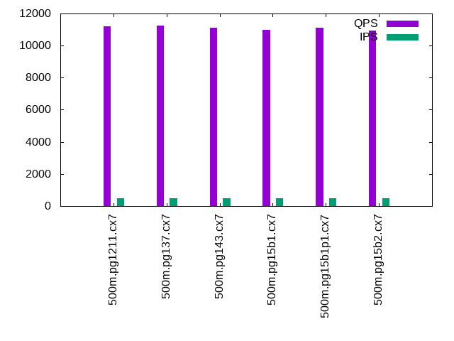

This is a report for the insert benchmark with 500M docs and 1 client(s). It is generated by scripts (bash, awk, sed) and Tufte might not be impressed. An overview of the insert benchmark is here and a short update is here. Below, by DBMS, I mean DBMS+version.config. An example is my8020.c10b40 where my means MySQL, 8020 is version 8.0.20 and c10b40 is the name for the configuration file.
The test server is an Intel NUC with 4 cores, 16G RAM and a Samsung 970 EVO. More details are here. Clients and the DBMS share one server. The per-database configs are in the per-database subdirectories here.
The tested DBMS are:
The numbers are inserts/s for l.i0 and l.i1, indexed docs (or rows) /s for l.x and queries/s for q*.2. The values are the average rate over the entire test for inserts (IPS) and queries (QPS). The range of values for IPS and QPS is split into 3 parts: bottom 25%, middle 50%, top 25%. Values in the bottom 25% have a red background, values in the top 25% have a green background and values in the middle have no color. A gray background is used for values that can be ignored because the DBMS did not sustain the target insert rate. Red backgrounds are not used when the minimum value is within 80% of the max value.
| dbms | l.i0 | l.x | l.i1 | q100.1 | q500.1 | q1000.1 |
|---|---|---|---|---|---|---|
| 500m.pg1211.cx7 | 103713 | 223858 | 2545 | 11005 | 11191 | 11080 |
| 500m.pg137.cx7 | 107689 | 241828 | 2611 | 11092 | 11230 | 11176 |
| 500m.pg143.cx7 | 100080 | 241945 | 2544 | 11056 | 11104 | 11016 |
| 500m.pg15b1.cx7 | 90612 | 242179 | 2541 | 10901 | 10973 | 10809 |
| 500m.pg15b1p1.cx7 | 105708 | 240433 | 2552 | 11099 | 11118 | 11050 |
| 500m.pg15b2.cx7 | 91659 | 235341 | 2588 | 10903 | 10936 | 10881 |
This lists the average rate of inserts/s for the tests that do inserts concurrent with queries. For such tests the query rate is listed in the table above. The read+write tests are setup so that the insert rate should match the target rate every second. Cells that are not at least 95% of the target have a red background to indicate a failure to satisfy the target.
| dbms | q100.1 | q500.1 | q1000.1 |
|---|---|---|---|
| pg1211.cx7 | 100 | 499 | 999 |
| pg137.cx7 | 100 | 500 | 999 |
| pg143.cx7 | 100 | 499 | 999 |
| pg15b1.cx7 | 100 | 499 | 999 |
| pg15b1p1.cx7 | 100 | 500 | 999 |
| pg15b2.cx7 | 100 | 500 | 999 |
| target | 100 | 500 | 1000 |
l.i0: load without secondary indexes. Graphs for performance per 1-second interval are here.
Average throughput:
Insert response time histogram: each cell has the percentage of responses that take <= the time in the header and max is the max response time in seconds. For the max column values in the top 25% of the range have a red background and in the bottom 25% of the range have a green background. The red background is not used when the min value is within 80% of the max value.
| dbms | 256us | 1ms | 4ms | 16ms | 64ms | 256ms | 1s | 4s | 16s | gt | max |
|---|---|---|---|---|---|---|---|---|---|---|---|
| pg1211.cx7 | 95.179 | 4.819 | 0.002 | nonzero | nonzero | 0.190 | |||||
| pg137.cx7 | 97.165 | 2.831 | 0.003 | 0.001 | nonzero | 0.164 | |||||
| pg143.cx7 | 76.414 | 23.582 | 0.003 | 0.001 | nonzero | 0.166 | |||||
| pg15b1.cx7 | 0.122 | 99.876 | 0.002 | nonzero | nonzero | 0.155 | |||||
| pg15b1p1.cx7 | 96.646 | 3.351 | 0.002 | nonzero | nonzero | 0.191 | |||||
| pg15b2.cx7 | 0.585 | 99.410 | 0.004 | 0.001 | nonzero | nonzero | 0.331 |
Performance metrics for the DBMS listed above. Some are normalized by throughput, others are not. Legend for results is here.
ips qps rps rmbps wps wmbps rpq rkbpq wpi wkbpi csps cpups cspq cpupq dbgb1 dbgb2 rss maxop p50 p99 tag 103713 0 45 0.4 197.2 39.9 0.000 0.004 0.002 0.394 12408 42.5 0.120 16 47.8 55.9 0.0 0.190 103827 99494 500m.pg1211.cx7 107689 0 39 0.3 162.2 51.5 0.000 0.003 0.002 0.490 12949 43.7 0.120 16 47.8 63.0 0.0 0.164 108085 101689 500m.pg137.cx7 100080 0 41 0.3 142.4 46.9 0.000 0.003 0.001 0.480 12030 44.1 0.120 18 47.8 63.6 0.0 0.166 100564 94696 500m.pg143.cx7 90612 0 38 0.3 128.3 42.4 0.000 0.003 0.001 0.479 10912 42.4 0.120 19 47.8 63.2 0.0 0.155 90704 86385 500m.pg15b1.cx7 105708 0 40 0.3 144.2 48.5 0.000 0.003 0.001 0.470 12609 44.5 0.119 17 47.8 64.3 0.0 0.191 106085 99794 500m.pg15b1p1.cx7 91659 0 38 0.3 129.4 43.0 0.000 0.003 0.001 0.480 11040 42.7 0.120 19 47.8 63.8 0.0 0.331 91841 87631 500m.pg15b2.cx7
l.x: create secondary indexes.
Average throughput:
Performance metrics for the DBMS listed above. Some are normalized by throughput, others are not. Legend for results is here.
ips qps rps rmbps wps wmbps rpq rkbpq wpi wkbpi csps cpups cspq cpupq dbgb1 dbgb2 rss maxop p50 p99 tag 223858 0 577 70.0 486.4 105.4 0.003 0.320 0.002 0.482 1028 23.0 0.005 4 91.9 115.5 0.0 0.003 NA NA 500m.pg1211.cx7 241828 0 592 73.6 196.9 75.9 0.002 0.312 0.001 0.321 526 23.2 0.002 4 91.9 107.0 0.0 0.004 NA NA 500m.pg137.cx7 241945 0 593 73.6 195.2 75.6 0.002 0.311 0.001 0.320 587 23.2 0.002 4 91.9 108.9 0.0 0.003 NA NA 500m.pg143.cx7 242179 0 670 82.9 224.3 88.2 0.003 0.351 0.001 0.373 695 23.3 0.003 4 91.9 110.9 0.0 0.003 NA NA 500m.pg15b1.cx7 240433 0 664 82.4 220.7 87.0 0.003 0.351 0.001 0.371 601 23.1 0.002 4 91.9 109.2 0.0 0.003 NA NA 500m.pg15b1p1.cx7 235341 0 649 80.6 221.3 86.1 0.003 0.351 0.001 0.374 721 22.8 0.003 4 91.9 112.8 0.0 0.005 NA NA 500m.pg15b2.cx7
l.i1: continue load after secondary indexes created. Graphs for performance per 1-second interval are here.
Average throughput:
Insert response time histogram: each cell has the percentage of responses that take <= the time in the header and max is the max response time in seconds. For the max column values in the top 25% of the range have a red background and in the bottom 25% of the range have a green background. The red background is not used when the min value is within 80% of the max value.
| dbms | 256us | 1ms | 4ms | 16ms | 64ms | 256ms | 1s | 4s | 16s | gt | max |
|---|---|---|---|---|---|---|---|---|---|---|---|
| pg1211.cx7 | 32.427 | 67.526 | 0.046 | 0.135 | |||||||
| pg137.cx7 | 34.766 | 65.124 | 0.111 | 0.148 | |||||||
| pg143.cx7 | 32.624 | 67.284 | 0.091 | 0.116 | |||||||
| pg15b1.cx7 | 32.864 | 67.018 | 0.118 | 0.210 | |||||||
| pg15b1p1.cx7 | 33.149 | 66.741 | 0.110 | 0.173 | |||||||
| pg15b2.cx7 | 34.069 | 65.858 | 0.072 | 0.174 |
Performance metrics for the DBMS listed above. Some are normalized by throughput, others are not. Legend for results is here.
ips qps rps rmbps wps wmbps rpq rkbpq wpi wkbpi csps cpups cspq cpupq dbgb1 dbgb2 rss maxop p50 p99 tag 2545 0 3403 27.3 4288.1 68.3 1.337 10.971 1.685 27.498 7891 22.7 3.100 357 93.6 114.1 0.0 0.135 2549 1548 500m.pg1211.cx7 2611 0 3523 28.2 4462.6 71.2 1.349 11.066 1.709 27.910 8233 22.8 3.153 349 93.6 113.1 0.0 0.148 2647 1598 500m.pg137.cx7 2544 0 3422 27.4 4321.8 69.8 1.345 11.032 1.698 28.101 7949 20.9 3.124 329 93.6 120.0 0.0 0.116 2597 1348 500m.pg143.cx7 2541 0 3425 27.4 4335.0 68.3 1.348 11.056 1.706 27.519 7835 20.5 3.083 323 93.6 117.5 0.0 0.210 2597 1248 500m.pg15b1.cx7 2552 0 3438 27.5 4330.0 69.8 1.347 11.049 1.696 27.988 7940 20.7 3.111 324 93.6 120.1 0.0 0.173 2647 1398 500m.pg15b1p1.cx7 2588 0 3489 27.9 4407.7 69.0 1.348 11.056 1.703 27.310 7975 20.7 3.082 320 93.6 118.3 0.0 0.174 2647 1348 500m.pg15b2.cx7
q100.1: range queries with 100 insert/s per client. Graphs for performance per 1-second interval are here.
Average throughput:
Query response time histogram: each cell has the percentage of responses that take <= the time in the header and max is the max response time in seconds. For max values in the top 25% of the range have a red background and in the bottom 25% of the range have a green background. The red background is not used when the min value is within 80% of the max value.
| dbms | 256us | 1ms | 4ms | 16ms | 64ms | 256ms | 1s | 4s | 16s | gt | max |
|---|---|---|---|---|---|---|---|---|---|---|---|
| pg1211.cx7 | 99.720 | 0.279 | 0.001 | nonzero | 0.015 | ||||||
| pg137.cx7 | 99.565 | 0.430 | 0.004 | 0.002 | nonzero | nonzero | 0.075 | ||||
| pg143.cx7 | 99.701 | 0.291 | 0.006 | 0.001 | nonzero | nonzero | 0.103 | ||||
| pg15b1.cx7 | 99.770 | 0.224 | 0.005 | 0.001 | nonzero | 0.061 | |||||
| pg15b1p1.cx7 | 99.889 | 0.107 | 0.004 | nonzero | nonzero | 0.061 | |||||
| pg15b2.cx7 | 99.660 | 0.333 | 0.005 | 0.002 | nonzero | 0.055 |
Insert response time histogram: each cell has the percentage of responses that take <= the time in the header and max is the max response time in seconds. For max values in the top 25% of the range have a red background and in the bottom 25% of the range have a green background. The red background is not used when the min value is within 80% of the max value.
| dbms | 256us | 1ms | 4ms | 16ms | 64ms | 256ms | 1s | 4s | 16s | gt | max |
|---|---|---|---|---|---|---|---|---|---|---|---|
| pg1211.cx7 | 85.257 | 14.743 | 0.032 | ||||||||
| pg137.cx7 | 84.292 | 15.708 | 0.059 | ||||||||
| pg143.cx7 | 95.778 | 4.215 | 0.007 | 0.118 | |||||||
| pg15b1.cx7 | 96.056 | 3.938 | 0.007 | 0.586 | |||||||
| pg15b1p1.cx7 | 97.000 | 2.993 | 0.007 | 0.110 | |||||||
| pg15b2.cx7 | 96.146 | 3.847 | 0.007 | 0.066 |
Performance metrics for the DBMS listed above. Some are normalized by throughput, others are not. Legend for results is here.
ips qps rps rmbps wps wmbps rpq rkbpq wpi wkbpi csps cpups cspq cpupq dbgb1 dbgb2 rss maxop p50 p99 tag 100 11005 137 1.1 269.8 4.2 0.012 0.102 2.704 42.929 42591 28.1 3.870 102 93.7 98.0 0.0 0.015 11140 3116 500m.pg1211.cx7 100 11092 139 1.1 288.6 4.4 0.013 0.103 2.892 44.697 42925 28.1 3.870 101 93.7 98.3 0.0 0.075 11335 2445 500m.pg137.cx7 100 11056 139 1.1 333.7 4.8 0.013 0.104 3.344 49.119 42715 26.7 3.863 97 93.7 104.8 0.0 0.103 11239 2879 500m.pg143.cx7 100 10901 139 1.1 311.8 4.6 0.013 0.105 3.124 47.258 42094 26.7 3.861 98 93.7 102.3 0.0 0.061 11044 3468 500m.pg15b1.cx7 100 11099 139 1.1 278.4 4.3 0.013 0.103 2.790 44.270 42840 26.5 3.860 96 93.7 104.5 0.0 0.061 11188 7256 500m.pg15b1p1.cx7 100 10903 139 1.1 293.2 4.4 0.013 0.105 2.935 45.087 42093 26.5 3.861 97 93.7 104.3 0.0 0.055 11092 2797 500m.pg15b2.cx7
q500.1: range queries with 500 insert/s per client. Graphs for performance per 1-second interval are here.
Average throughput:
Query response time histogram: each cell has the percentage of responses that take <= the time in the header and max is the max response time in seconds. For max values in the top 25% of the range have a red background and in the bottom 25% of the range have a green background. The red background is not used when the min value is within 80% of the max value.
| dbms | 256us | 1ms | 4ms | 16ms | 64ms | 256ms | 1s | 4s | 16s | gt | max |
|---|---|---|---|---|---|---|---|---|---|---|---|
| pg1211.cx7 | 99.977 | 0.021 | 0.001 | nonzero | 0.005 | ||||||
| pg137.cx7 | 99.977 | 0.022 | 0.001 | nonzero | 0.008 | ||||||
| pg143.cx7 | 99.974 | 0.025 | 0.002 | nonzero | 0.005 | ||||||
| pg15b1.cx7 | 99.974 | 0.024 | 0.002 | nonzero | 0.008 | ||||||
| pg15b1p1.cx7 | 99.974 | 0.024 | 0.002 | nonzero | 0.011 | ||||||
| pg15b2.cx7 | 99.973 | 0.025 | 0.002 | nonzero | 0.007 |
Insert response time histogram: each cell has the percentage of responses that take <= the time in the header and max is the max response time in seconds. For max values in the top 25% of the range have a red background and in the bottom 25% of the range have a green background. The red background is not used when the min value is within 80% of the max value.
| dbms | 256us | 1ms | 4ms | 16ms | 64ms | 256ms | 1s | 4s | 16s | gt | max |
|---|---|---|---|---|---|---|---|---|---|---|---|
| pg1211.cx7 | 96.867 | 3.122 | 0.011 | 0.080 | |||||||
| pg137.cx7 | 96.539 | 3.446 | 0.015 | 0.111 | |||||||
| pg143.cx7 | 95.378 | 4.614 | 0.008 | 0.098 | |||||||
| pg15b1.cx7 | 95.375 | 4.618 | 0.007 | 0.079 | |||||||
| pg15b1p1.cx7 | 96.736 | 3.264 | 0.061 | ||||||||
| pg15b2.cx7 | 95.237 | 4.754 | 0.008 | 0.096 |
Performance metrics for the DBMS listed above. Some are normalized by throughput, others are not. Legend for results is here.
ips qps rps rmbps wps wmbps rpq rkbpq wpi wkbpi csps cpups cspq cpupq dbgb1 dbgb2 rss maxop p50 p99 tag 499 11191 657 5.2 1053.9 18.2 0.059 0.476 2.110 37.301 44406 28.7 3.968 103 94.6 98.8 0.0 0.005 11204 11012 500m.pg1211.cx7 500 11230 658 5.2 1054.8 18.2 0.059 0.475 2.112 37.249 44551 28.7 3.967 102 94.6 98.8 0.0 0.008 11236 11081 500m.pg137.cx7 499 11104 658 5.2 1015.7 17.6 0.059 0.482 2.034 36.145 44036 27.7 3.966 100 94.6 100.1 0.0 0.005 11108 10964 500m.pg143.cx7 499 10973 658 5.2 1017.0 17.6 0.060 0.487 2.036 36.168 43501 27.7 3.964 101 94.6 100.1 0.0 0.008 10980 10852 500m.pg15b1.cx7 500 11118 662 5.3 1019.6 17.7 0.060 0.484 2.041 36.195 44057 27.6 3.963 99 94.6 100.1 0.0 0.011 11124 10980 500m.pg15b1p1.cx7 500 10936 658 5.2 1018.5 17.7 0.060 0.489 2.039 36.184 43354 27.6 3.964 101 94.6 100.1 0.0 0.007 10936 10804 500m.pg15b2.cx7
q1000.1: range queries with 1000 insert/s per client. Graphs for performance per 1-second interval are here.
Average throughput:
Query response time histogram: each cell has the percentage of responses that take <= the time in the header and max is the max response time in seconds. For max values in the top 25% of the range have a red background and in the bottom 25% of the range have a green background. The red background is not used when the min value is within 80% of the max value.
| dbms | 256us | 1ms | 4ms | 16ms | 64ms | 256ms | 1s | 4s | 16s | gt | max |
|---|---|---|---|---|---|---|---|---|---|---|---|
| pg1211.cx7 | 99.936 | 0.062 | 0.002 | nonzero | 0.007 | ||||||
| pg137.cx7 | 99.935 | 0.063 | 0.002 | nonzero | nonzero | 0.016 | |||||
| pg143.cx7 | 99.930 | 0.067 | 0.003 | nonzero | 0.010 | ||||||
| pg15b1.cx7 | 99.928 | 0.069 | 0.003 | nonzero | 0.008 | ||||||
| pg15b1p1.cx7 | 99.930 | 0.068 | 0.002 | nonzero | 0.007 | ||||||
| pg15b2.cx7 | 99.924 | 0.073 | 0.002 | nonzero | 0.007 |
Insert response time histogram: each cell has the percentage of responses that take <= the time in the header and max is the max response time in seconds. For max values in the top 25% of the range have a red background and in the bottom 25% of the range have a green background. The red background is not used when the min value is within 80% of the max value.
| dbms | 256us | 1ms | 4ms | 16ms | 64ms | 256ms | 1s | 4s | 16s | gt | max |
|---|---|---|---|---|---|---|---|---|---|---|---|
| pg1211.cx7 | 92.145 | 7.839 | 0.016 | 0.085 | |||||||
| pg137.cx7 | 91.624 | 8.343 | 0.033 | 0.152 | |||||||
| pg143.cx7 | 88.764 | 11.219 | 0.017 | 0.082 | |||||||
| pg15b1.cx7 | 87.883 | 12.099 | 0.018 | 0.083 | |||||||
| pg15b1p1.cx7 | 88.816 | 11.170 | 0.014 | 0.090 | |||||||
| pg15b2.cx7 | 88.012 | 11.971 | 0.017 | 0.101 |
Performance metrics for the DBMS listed above. Some are normalized by throughput, others are not. Legend for results is here.
ips qps rps rmbps wps wmbps rpq rkbpq wpi wkbpi csps cpups cspq cpupq dbgb1 dbgb2 rss maxop p50 p99 tag 999 11080 1292 10.3 1699.0 32.3 0.117 0.952 1.701 33.132 45413 29.6 4.099 107 95.5 102.8 0.0 0.007 11092 10884 500m.pg1211.cx7 999 11176 1294 10.3 1692.5 32.3 0.116 0.945 1.694 33.056 45782 29.6 4.096 106 95.5 102.8 0.0 0.016 11188 10980 500m.pg137.cx7 999 11016 1294 10.3 1737.1 31.6 0.117 0.962 1.739 32.369 45133 28.7 4.097 104 95.5 104.5 0.0 0.010 11028 10852 500m.pg143.cx7 999 10809 1294 10.3 1739.9 31.6 0.120 0.980 1.741 32.364 44304 28.8 4.099 107 95.5 104.5 0.0 0.008 10820 10660 500m.pg15b1.cx7 999 11050 1295 10.4 1735.3 31.5 0.117 0.959 1.737 32.283 45215 28.7 4.092 104 95.5 104.5 0.0 0.007 11060 10884 500m.pg15b1p1.cx7 999 10881 1294 10.3 1733.9 31.5 0.119 0.974 1.736 32.289 44585 28.8 4.098 106 95.5 104.5 0.0 0.007 10888 10724 500m.pg15b2.cx7
l.i0: load without secondary indexes
Performance metrics for all DBMS, not just the ones listed above. Some are normalized by throughput, others are not. Legend for results is here.
ips qps rps rmbps wps wmbps rpq rkbpq wpi wkbpi csps cpups cspq cpupq dbgb1 dbgb2 rss maxop p50 p99 tag 103713 0 45 0.4 197.2 39.9 0.000 0.004 0.002 0.394 12408 42.5 0.120 16 47.8 55.9 0.0 0.190 103827 99494 500m.pg1211.cx7 107689 0 39 0.3 162.2 51.5 0.000 0.003 0.002 0.490 12949 43.7 0.120 16 47.8 63.0 0.0 0.164 108085 101689 500m.pg137.cx7 100080 0 41 0.3 142.4 46.9 0.000 0.003 0.001 0.480 12030 44.1 0.120 18 47.8 63.6 0.0 0.166 100564 94696 500m.pg143.cx7 90612 0 38 0.3 128.3 42.4 0.000 0.003 0.001 0.479 10912 42.4 0.120 19 47.8 63.2 0.0 0.155 90704 86385 500m.pg15b1.cx7 105708 0 40 0.3 144.2 48.5 0.000 0.003 0.001 0.470 12609 44.5 0.119 17 47.8 64.3 0.0 0.191 106085 99794 500m.pg15b1p1.cx7 91659 0 38 0.3 129.4 43.0 0.000 0.003 0.001 0.480 11040 42.7 0.120 19 47.8 63.8 0.0 0.331 91841 87631 500m.pg15b2.cx7
l.x: create secondary indexes
Performance metrics for all DBMS, not just the ones listed above. Some are normalized by throughput, others are not. Legend for results is here.
ips qps rps rmbps wps wmbps rpq rkbpq wpi wkbpi csps cpups cspq cpupq dbgb1 dbgb2 rss maxop p50 p99 tag 223858 0 577 70.0 486.4 105.4 0.003 0.320 0.002 0.482 1028 23.0 0.005 4 91.9 115.5 0.0 0.003 NA NA 500m.pg1211.cx7 241828 0 592 73.6 196.9 75.9 0.002 0.312 0.001 0.321 526 23.2 0.002 4 91.9 107.0 0.0 0.004 NA NA 500m.pg137.cx7 241945 0 593 73.6 195.2 75.6 0.002 0.311 0.001 0.320 587 23.2 0.002 4 91.9 108.9 0.0 0.003 NA NA 500m.pg143.cx7 242179 0 670 82.9 224.3 88.2 0.003 0.351 0.001 0.373 695 23.3 0.003 4 91.9 110.9 0.0 0.003 NA NA 500m.pg15b1.cx7 240433 0 664 82.4 220.7 87.0 0.003 0.351 0.001 0.371 601 23.1 0.002 4 91.9 109.2 0.0 0.003 NA NA 500m.pg15b1p1.cx7 235341 0 649 80.6 221.3 86.1 0.003 0.351 0.001 0.374 721 22.8 0.003 4 91.9 112.8 0.0 0.005 NA NA 500m.pg15b2.cx7
l.i1: continue load after secondary indexes created
Performance metrics for all DBMS, not just the ones listed above. Some are normalized by throughput, others are not. Legend for results is here.
ips qps rps rmbps wps wmbps rpq rkbpq wpi wkbpi csps cpups cspq cpupq dbgb1 dbgb2 rss maxop p50 p99 tag 2545 0 3403 27.3 4288.1 68.3 1.337 10.971 1.685 27.498 7891 22.7 3.100 357 93.6 114.1 0.0 0.135 2549 1548 500m.pg1211.cx7 2611 0 3523 28.2 4462.6 71.2 1.349 11.066 1.709 27.910 8233 22.8 3.153 349 93.6 113.1 0.0 0.148 2647 1598 500m.pg137.cx7 2544 0 3422 27.4 4321.8 69.8 1.345 11.032 1.698 28.101 7949 20.9 3.124 329 93.6 120.0 0.0 0.116 2597 1348 500m.pg143.cx7 2541 0 3425 27.4 4335.0 68.3 1.348 11.056 1.706 27.519 7835 20.5 3.083 323 93.6 117.5 0.0 0.210 2597 1248 500m.pg15b1.cx7 2552 0 3438 27.5 4330.0 69.8 1.347 11.049 1.696 27.988 7940 20.7 3.111 324 93.6 120.1 0.0 0.173 2647 1398 500m.pg15b1p1.cx7 2588 0 3489 27.9 4407.7 69.0 1.348 11.056 1.703 27.310 7975 20.7 3.082 320 93.6 118.3 0.0 0.174 2647 1348 500m.pg15b2.cx7
q100.1: range queries with 100 insert/s per client
Performance metrics for all DBMS, not just the ones listed above. Some are normalized by throughput, others are not. Legend for results is here.
ips qps rps rmbps wps wmbps rpq rkbpq wpi wkbpi csps cpups cspq cpupq dbgb1 dbgb2 rss maxop p50 p99 tag 100 11005 137 1.1 269.8 4.2 0.012 0.102 2.704 42.929 42591 28.1 3.870 102 93.7 98.0 0.0 0.015 11140 3116 500m.pg1211.cx7 100 11092 139 1.1 288.6 4.4 0.013 0.103 2.892 44.697 42925 28.1 3.870 101 93.7 98.3 0.0 0.075 11335 2445 500m.pg137.cx7 100 11056 139 1.1 333.7 4.8 0.013 0.104 3.344 49.119 42715 26.7 3.863 97 93.7 104.8 0.0 0.103 11239 2879 500m.pg143.cx7 100 10901 139 1.1 311.8 4.6 0.013 0.105 3.124 47.258 42094 26.7 3.861 98 93.7 102.3 0.0 0.061 11044 3468 500m.pg15b1.cx7 100 11099 139 1.1 278.4 4.3 0.013 0.103 2.790 44.270 42840 26.5 3.860 96 93.7 104.5 0.0 0.061 11188 7256 500m.pg15b1p1.cx7 100 10903 139 1.1 293.2 4.4 0.013 0.105 2.935 45.087 42093 26.5 3.861 97 93.7 104.3 0.0 0.055 11092 2797 500m.pg15b2.cx7
q500.1: range queries with 500 insert/s per client
Performance metrics for all DBMS, not just the ones listed above. Some are normalized by throughput, others are not. Legend for results is here.
ips qps rps rmbps wps wmbps rpq rkbpq wpi wkbpi csps cpups cspq cpupq dbgb1 dbgb2 rss maxop p50 p99 tag 499 11191 657 5.2 1053.9 18.2 0.059 0.476 2.110 37.301 44406 28.7 3.968 103 94.6 98.8 0.0 0.005 11204 11012 500m.pg1211.cx7 500 11230 658 5.2 1054.8 18.2 0.059 0.475 2.112 37.249 44551 28.7 3.967 102 94.6 98.8 0.0 0.008 11236 11081 500m.pg137.cx7 499 11104 658 5.2 1015.7 17.6 0.059 0.482 2.034 36.145 44036 27.7 3.966 100 94.6 100.1 0.0 0.005 11108 10964 500m.pg143.cx7 499 10973 658 5.2 1017.0 17.6 0.060 0.487 2.036 36.168 43501 27.7 3.964 101 94.6 100.1 0.0 0.008 10980 10852 500m.pg15b1.cx7 500 11118 662 5.3 1019.6 17.7 0.060 0.484 2.041 36.195 44057 27.6 3.963 99 94.6 100.1 0.0 0.011 11124 10980 500m.pg15b1p1.cx7 500 10936 658 5.2 1018.5 17.7 0.060 0.489 2.039 36.184 43354 27.6 3.964 101 94.6 100.1 0.0 0.007 10936 10804 500m.pg15b2.cx7
q1000.1: range queries with 1000 insert/s per client
Performance metrics for all DBMS, not just the ones listed above. Some are normalized by throughput, others are not. Legend for results is here.
ips qps rps rmbps wps wmbps rpq rkbpq wpi wkbpi csps cpups cspq cpupq dbgb1 dbgb2 rss maxop p50 p99 tag 999 11080 1292 10.3 1699.0 32.3 0.117 0.952 1.701 33.132 45413 29.6 4.099 107 95.5 102.8 0.0 0.007 11092 10884 500m.pg1211.cx7 999 11176 1294 10.3 1692.5 32.3 0.116 0.945 1.694 33.056 45782 29.6 4.096 106 95.5 102.8 0.0 0.016 11188 10980 500m.pg137.cx7 999 11016 1294 10.3 1737.1 31.6 0.117 0.962 1.739 32.369 45133 28.7 4.097 104 95.5 104.5 0.0 0.010 11028 10852 500m.pg143.cx7 999 10809 1294 10.3 1739.9 31.6 0.120 0.980 1.741 32.364 44304 28.8 4.099 107 95.5 104.5 0.0 0.008 10820 10660 500m.pg15b1.cx7 999 11050 1295 10.4 1735.3 31.5 0.117 0.959 1.737 32.283 45215 28.7 4.092 104 95.5 104.5 0.0 0.007 11060 10884 500m.pg15b1p1.cx7 999 10881 1294 10.3 1733.9 31.5 0.119 0.974 1.736 32.289 44585 28.8 4.098 106 95.5 104.5 0.0 0.007 10888 10724 500m.pg15b2.cx7
Insert response time histogram
256us 1ms 4ms 16ms 64ms 256ms 1s 4s 16s gt max tag 0.000 95.179 4.819 0.002 nonzero nonzero 0.000 0.000 0.000 0.000 0.190 pg1211.cx7 0.000 97.165 2.831 0.003 0.001 nonzero 0.000 0.000 0.000 0.000 0.164 pg137.cx7 0.000 76.414 23.582 0.003 0.001 nonzero 0.000 0.000 0.000 0.000 0.166 pg143.cx7 0.000 0.122 99.876 0.002 nonzero nonzero 0.000 0.000 0.000 0.000 0.155 pg15b1.cx7 0.000 96.646 3.351 0.002 nonzero nonzero 0.000 0.000 0.000 0.000 0.191 pg15b1p1.cx7 0.000 0.585 99.410 0.004 0.001 nonzero nonzero 0.000 0.000 0.000 0.331 pg15b2.cx7
TODO - determine whether there is data for create index response time
Insert response time histogram
256us 1ms 4ms 16ms 64ms 256ms 1s 4s 16s gt max tag 0.000 0.000 0.000 32.427 67.526 0.046 0.000 0.000 0.000 0.000 0.135 pg1211.cx7 0.000 0.000 0.000 34.766 65.124 0.111 0.000 0.000 0.000 0.000 0.148 pg137.cx7 0.000 0.000 0.000 32.624 67.284 0.091 0.000 0.000 0.000 0.000 0.116 pg143.cx7 0.000 0.000 0.000 32.864 67.018 0.118 0.000 0.000 0.000 0.000 0.210 pg15b1.cx7 0.000 0.000 0.000 33.149 66.741 0.110 0.000 0.000 0.000 0.000 0.173 pg15b1p1.cx7 0.000 0.000 0.000 34.069 65.858 0.072 0.000 0.000 0.000 0.000 0.174 pg15b2.cx7
Query response time histogram
256us 1ms 4ms 16ms 64ms 256ms 1s 4s 16s gt max tag 99.720 0.279 0.001 nonzero 0.000 0.000 0.000 0.000 0.000 0.000 0.015 pg1211.cx7 99.565 0.430 0.004 0.002 nonzero nonzero 0.000 0.000 0.000 0.000 0.075 pg137.cx7 99.701 0.291 0.006 0.001 nonzero nonzero 0.000 0.000 0.000 0.000 0.103 pg143.cx7 99.770 0.224 0.005 0.001 nonzero 0.000 0.000 0.000 0.000 0.000 0.061 pg15b1.cx7 99.889 0.107 0.004 nonzero nonzero 0.000 0.000 0.000 0.000 0.000 0.061 pg15b1p1.cx7 99.660 0.333 0.005 0.002 nonzero 0.000 0.000 0.000 0.000 0.000 0.055 pg15b2.cx7
Insert response time histogram
256us 1ms 4ms 16ms 64ms 256ms 1s 4s 16s gt max tag 0.000 0.000 0.000 85.257 14.743 0.000 0.000 0.000 0.000 0.000 0.032 pg1211.cx7 0.000 0.000 0.000 84.292 15.708 0.000 0.000 0.000 0.000 0.000 0.059 pg137.cx7 0.000 0.000 0.000 95.778 4.215 0.007 0.000 0.000 0.000 0.000 0.118 pg143.cx7 0.000 0.000 0.000 96.056 3.938 0.000 0.007 0.000 0.000 0.000 0.586 pg15b1.cx7 0.000 0.000 0.000 97.000 2.993 0.007 0.000 0.000 0.000 0.000 0.110 pg15b1p1.cx7 0.000 0.000 0.000 96.146 3.847 0.007 0.000 0.000 0.000 0.000 0.066 pg15b2.cx7
Query response time histogram
256us 1ms 4ms 16ms 64ms 256ms 1s 4s 16s gt max tag 99.977 0.021 0.001 nonzero 0.000 0.000 0.000 0.000 0.000 0.000 0.005 pg1211.cx7 99.977 0.022 0.001 nonzero 0.000 0.000 0.000 0.000 0.000 0.000 0.008 pg137.cx7 99.974 0.025 0.002 nonzero 0.000 0.000 0.000 0.000 0.000 0.000 0.005 pg143.cx7 99.974 0.024 0.002 nonzero 0.000 0.000 0.000 0.000 0.000 0.000 0.008 pg15b1.cx7 99.974 0.024 0.002 nonzero 0.000 0.000 0.000 0.000 0.000 0.000 0.011 pg15b1p1.cx7 99.973 0.025 0.002 nonzero 0.000 0.000 0.000 0.000 0.000 0.000 0.007 pg15b2.cx7
Insert response time histogram
256us 1ms 4ms 16ms 64ms 256ms 1s 4s 16s gt max tag 0.000 0.000 0.000 96.867 3.122 0.011 0.000 0.000 0.000 0.000 0.080 pg1211.cx7 0.000 0.000 0.000 96.539 3.446 0.015 0.000 0.000 0.000 0.000 0.111 pg137.cx7 0.000 0.000 0.000 95.378 4.614 0.008 0.000 0.000 0.000 0.000 0.098 pg143.cx7 0.000 0.000 0.000 95.375 4.618 0.007 0.000 0.000 0.000 0.000 0.079 pg15b1.cx7 0.000 0.000 0.000 96.736 3.264 0.000 0.000 0.000 0.000 0.000 0.061 pg15b1p1.cx7 0.000 0.000 0.000 95.237 4.754 0.008 0.000 0.000 0.000 0.000 0.096 pg15b2.cx7
Query response time histogram
256us 1ms 4ms 16ms 64ms 256ms 1s 4s 16s gt max tag 99.936 0.062 0.002 nonzero 0.000 0.000 0.000 0.000 0.000 0.000 0.007 pg1211.cx7 99.935 0.063 0.002 nonzero nonzero 0.000 0.000 0.000 0.000 0.000 0.016 pg137.cx7 99.930 0.067 0.003 nonzero 0.000 0.000 0.000 0.000 0.000 0.000 0.010 pg143.cx7 99.928 0.069 0.003 nonzero 0.000 0.000 0.000 0.000 0.000 0.000 0.008 pg15b1.cx7 99.930 0.068 0.002 nonzero 0.000 0.000 0.000 0.000 0.000 0.000 0.007 pg15b1p1.cx7 99.924 0.073 0.002 nonzero 0.000 0.000 0.000 0.000 0.000 0.000 0.007 pg15b2.cx7
Insert response time histogram
256us 1ms 4ms 16ms 64ms 256ms 1s 4s 16s gt max tag 0.000 0.000 0.000 92.145 7.839 0.016 0.000 0.000 0.000 0.000 0.085 pg1211.cx7 0.000 0.000 0.000 91.624 8.343 0.033 0.000 0.000 0.000 0.000 0.152 pg137.cx7 0.000 0.000 0.000 88.764 11.219 0.017 0.000 0.000 0.000 0.000 0.082 pg143.cx7 0.000 0.000 0.000 87.883 12.099 0.018 0.000 0.000 0.000 0.000 0.083 pg15b1.cx7 0.000 0.000 0.000 88.816 11.170 0.014 0.000 0.000 0.000 0.000 0.090 pg15b1p1.cx7 0.000 0.000 0.000 88.012 11.971 0.017 0.000 0.000 0.000 0.000 0.101 pg15b2.cx7